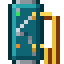

Terminal OS and ELCL: pages
Terminal OS and ELCL
CHGPROT
Command line and programs Firewall: BUILD
Change Protection
Syntax
CHGPROT DEV(device name) SPAN(text) PATH(*WORKING | *PROTECT)The first 3 parameters can be given without their keyword, in that order: DEV, SPAN, PATH.
Parameters
| Keyword | Prompt | Takes | Required | Default | Special values |
|---|---|---|---|---|---|
DEV | Device | Device name prompter field 10 long; F4 lists devices | Yes | ||
SPAN | Span | Text prompter field 24 long | Yes | ||
PATH | Path | Special value | Yes | *WORKING, *PROTECT |
Switches an Optical Transport Shelf's span onto its working or protect path by hand, for testing a protected link or moving traffic off a path you're about to work on. DEV is the shelf's device name (any other device is ELC2701) and SPAN its span's name (OTS01-OTS02, as RTVOPTSTS and DSPOPT show it; ELC2703 for any other).
The switch needs a ELC2705. Once switched, the shelf holds that path for as long as it stays up: a held protect path isn't given back to a restored working path, as a revertive shelf otherwise would. When the held path goes down, the hold ends and automatic protection switching takes over again. PATH(*WORKING) brings a span back from protect by hand. A switch raises the *PROTSWITCH trigger event (reason manual).
The command sends no completion message. See Optical networking.
CHGPROT DEV(OTS01) SPAN('OTS01-OTS02') PATH(*PROTECT)
MONMSG MSGID(ELC2705) EXEC(SNDPGMMSG MSG('Protect path not available'))